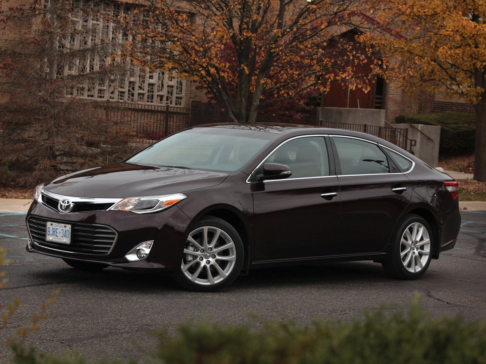
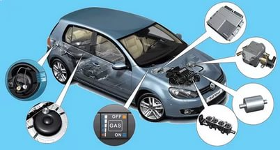

Как уменьшить расход бензина - экономия топлива - Просто Ланос

Просто Ланос
Lanos или Chevrolet Shans, он же ЗАЗ Шанс, он же Сенс и их производные. Все о пробеге и ремонте Ланос. Только полезные буквы.
среда, 22 июля 2015 г.
Как уменьшить расход бензина - экономия топлива
Как сэкономить, как уменьшить на 1 литр расход топлива или проще говоря, как на Ланосе ездить экономно. Когда купил Lanos, обкатывал по инструкции на трассе со скоростью около 70 км в час. Часто на 5 передаче ехал не более 65 км в час. На круг 2000 километров расход топлива составил шесть с половиной литров. Тогда мне это понравилось.В процессе эксплуатации разумеется средняя крейсерская скорость составляла около 90 километров в час, расход вырос на 1 литр. Суть экономии - минимальные обороты двигателя, это касается любого автомобиля. Доказательством тому заявление BMW, что экономия топлива в новой модели они достигли за счет уменьшения оборотов двигателя при движении по прямой. БМВ изменили передаточные числа коробки передач, не потеряв в скорости, зато они потеряли в расходе топлива.
Последнюю свою поездку я решил сделать точно также, уменьшить обороты двигателя при движении по прямой. Правда у меня не новый BMW, поэтому моя скорость составляла 60-65 километров в час. Результат не заставил себя ждать, расход составил по трассе около 6 литров на 100 километров. Термин "по прямой" - условный, хорший по качеству бензин тянет пятой передачей на подъем с легкостью. И да, мне нравится моя машина.
Теперь посчитаем экономию на 200 тысяч километров. Условно 1 литр это 1 доллар. Значит, это 2 тысячи долларов экономия на бензине. Одну тысячу спишем на капитальный ремонт двигателя, вторая тысяча чистая экономия. Вот как то так. Да! при экономии всегда важно учитывать температуру воздуха за бортом, чем прохладнее тем лучше. В идеале поставить интеркулер (охладитель воздуха) на патрубок воздушного фильтра. Многие наверно замечали, что до прогрева, на холодную машина тянет лучше. Все просто, в холодном воздухе больше кислорода, а значит и больше бесплатной энергии. о 18:08:00 Отправить по электронной почте Написать об этом в блоге Опубликовать в Twitter Опубликовать в Facebook Поделиться в Pinterest Мітки: Экономия
1 комментарий:
Alex Curaga 31 августа 2016 г., 21:22Езжу 60 км/ч на 5-й передаче по городу, иногда в пробках по 30 минут зависаю, но чаще дорога чистая и расход в среднем 9,6 л/100км. Заправляюсь всегда на одной и той же заправке до отстрела пистолета при полном баке. До 8 л/100км еще далеко, для этого не мешало бы железные поменять на легко сплавные диски, покрышки экономичные, подойдут и лысые, но опасно :).
Ответить Удалить Ответы Ответить Добавить комментарий Ещё
Следующее Предыдущее Главная страница Подписаться на: Комментарии к сообщению (Atom)
Поиск по ремонту
Популярные листы
Плохо греет печка Ланос - решено Печка Ланос Новая печка греет отлично, но в процессе эксплуатации, часто отрывается крепление - скоба, прижимающая радиатор печки салон... Ремонт ручки стеклоподъемника. Сломанная ручка стеклоподъемника Первый раз ручка поломалась, когда еще машина была на гарантии, но в сервисе отказались поменять, сосл... Вода в багажнике Машине пятый год. Было, первые годы не мог найти причину, почему после дождя в багажнике автомобиля собирается вода. Причем только с лево... Потек радиатор СО двигателя Ланос Все бы ничего, но потек радиатор системы охлаждения двигателя. Два года назад, по той же причине стоковый радиатор был заменен на бренд ЛУЗ... Скол на лобовом стекле. Поделюсь своим опытом по ремонту сколов на лобовом стекле, да и не только лобовом. Произошел с моей машиной случай, камень упал с моста на ... Легкий и быстрый ремонт глушителя выхлопной системы. ремонт глушителя Очень даже легкий и быстрый ремонт прогоревшего глушителя! В один из дней услышал резкий перепад звука в работе глушак...Архив ремонта
► 2018 (1) ► сентября (1) ► 2017 (2) ► ноября (1) ► марта (1) ► 2016 (3) ► сентября (1) ► августа (1) ► мая (1) ▼ 2015 (1) ▼ июля (1) Как уменьшить расход бензина - экономия топлива ► 2014 (2) ► октября (1) ► февраля (1) ► 2013 (7) ► декабря (1) ► октября (1) ► июля (1) ► июня (1) ► мая (2) ► марта (1) ► 2012 (4) ► декабря (2) ► ноября (2)Ещё...
Ferodo передние тормозные колодки Замена масла в двигателе Ремень ГРМ Шины Экономия аккумулятор вода в багажнике печка радиатор СО радиатор двигателя расширительный бачок СО ремонт глушителя ремонт ручки стеклоподъемника сервис скол на лобовом стекле стеклоочиститель стукКак сильно вы довольны своей машиной¿
Автор изображений для темы: fpm . Технологии Blogger .